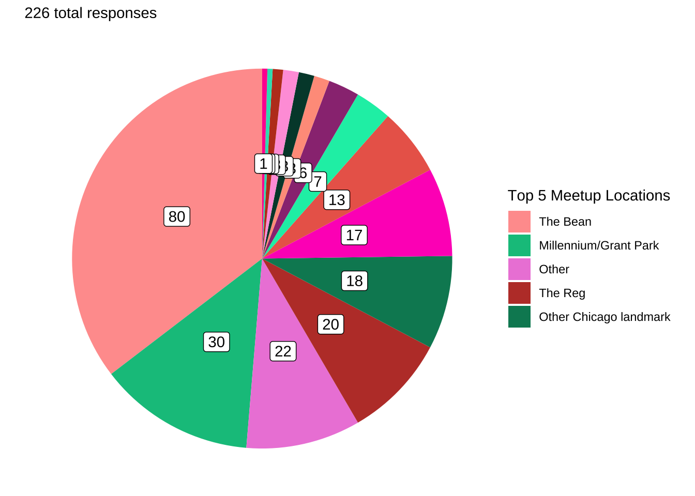
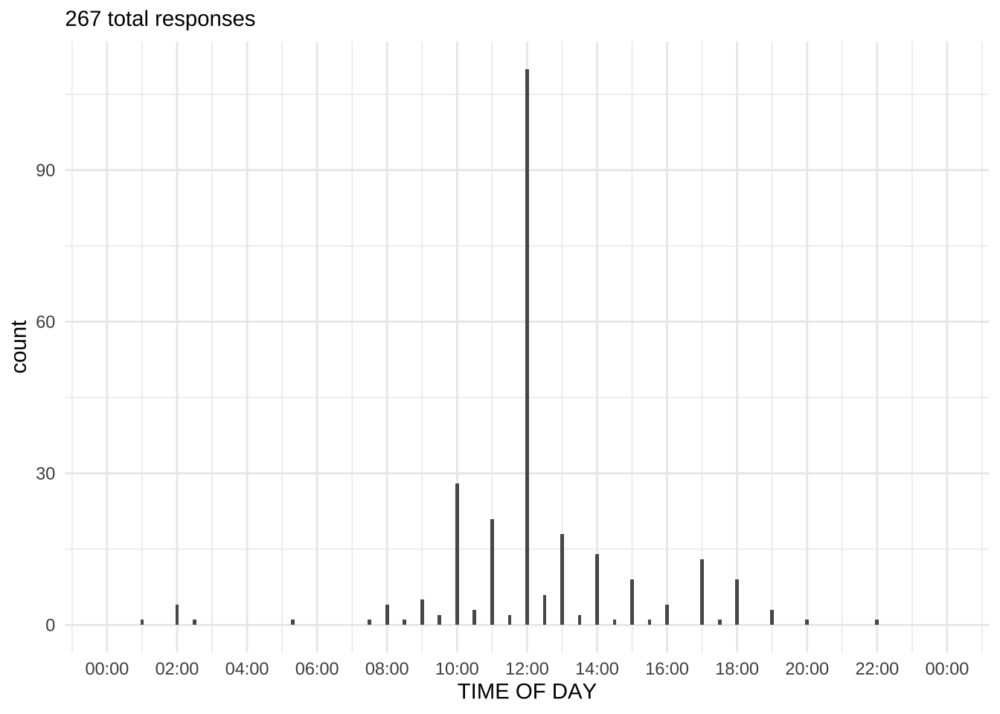
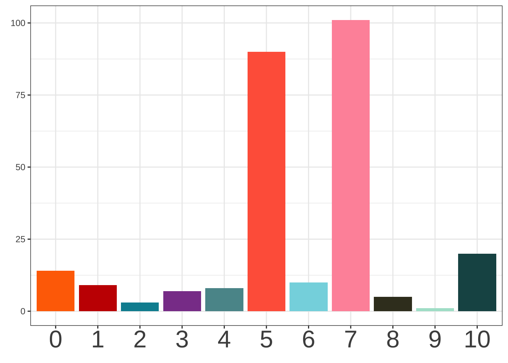

Schelling Games
Thomas Schelling introduced the concept of “focal points” in The Strategy of Conflict with the intention of expanding the contemporary perspectives of game theory to include cooperative, not just competitive, games in human decision making SCHELLING. Though his work certainty proved influential in this regard, concepts of focal points and coordination games have found relevance well beyond game theory and or economics as a whole. From improvisational music CANONNE to urban planning RONDINELLI, from human-computer interfacing WONG ET AL to linguistic anthropology BROWN AND LEVINSON, from social stereotyping YOON & HOLLINGSHEAD to online gaming ROSS AND COLLISTER, elements of Schelling’s framework of coordinated decision-making seem ubiquitous.
Survey design
Schelling’s classroom survey asked students questions challenging them to ambiguously “win” a game by coordinating with a stranger. Famously, he asked where and when the participants would meet a stranger in New York City without any prior communication. Additionally, the survey included a series of questions encouraging convergence on a response in more “game-like” circumstances: guessing a number, flipping a coin, etc.
This survey is in essence an abbreviated version of Shelling’s. It includes a selection of the “game-like” questions taken directly from Schelling’s survey. Because this survey was conducted at the University of Chicago, the where-and-when question asks about meeting a stranger in Chicago rather than New York City. The survey additionally includs two follow-up questions that were not included in Schelling’s data, changing the interpersonal context between the participant and hypothetical partner.
Data analysis
Responses have been cleaned to account for predictable variations in how individuals input popular responses – e.g., “the reg”, “Regenstein”, and “In the Reg.” are all reported as “The Reg.” Ambiguous responses (e.g., “the library”) are left ambiguous.
Exclusions
A total of NUMBER GOES HERE responses to the “meetup location” questions were excluded (out of NUMBER GOES HERE total) or re-coded as “Other”.
Responses that indicate clear misunderstanding of the question are excluded. These primarily consisted of responses in the “meeting a stranger” or “meeting a student” questions. Since these questions specify that the other party is unknown to the respondent, responses should not assume prior familiarity or experience with the other party, for example “their house”, “the last place we last met”, “where we usually see each other”, or “where you expect them to be at a certain time.”
Responses to the meetup location questions were coded as “Other” if they included multiple locations without rankings (e.g., “pret or hutch”), were overly vague (e.g., “a major center within the city that everyone knows about”), or fanciful/impossible (e.g., “THE MOON!”).
Survey Results
Managing to meet
Meeting a stranger
You are meeting a stranger in Chicago. You both know that you need to meet each other today, but you haven’t agreed on a place or a time and you have no means of communication. Remember, you cannot communicate with them now or previously in any way!
WHERE do you go to meet them?

Response breakdown:
| Response | N | Percent |
|---|---|---|
| The Bean | 64 | 35.75 |
| Millennium/Grant Park | 24 | 13.41 |
| The Reg | 19 | 10.61 |
| Other | 14 | 7.82 |
| The Quad | 13 | 7.26 |
| Other Chicago landmark | 12 | 6.70 |
| Other cafe/dining | 11 | 6.15 |
| Dorms | 6 | 3.35 |
| Sears/Willis Tower | 5 | 2.79 |
| Other residence | 3 | 1.68 |
| Other UChicago | 3 | 1.68 |
| Ex Libris | 2 | 1.12 |
| Other library | 1 | 0.56 |
| Pret a Manger | 1 | 0.56 |
| Reynold’s Club | 1 | 0.56 |
The most common response for where to meet a stranger in Chicago was The Bean, with 64 responses (35.75%).
Common responses of Chicago landmarks included the Bean/Cloudgate (\(N\) = 64), Millennium/Grant Park (\(N\) = 24), and the Sears/Willis Tower (\(N\) = 5).
All responses grouped into “Other” categories (Other, Other Chicago landmark, Other cafe/dining, Other residence, Other UChicago, Other library):
| Other responses |
|---|
| A Starbucks |
| Art Insitute |
| Art Institute |
| Bartlett Dining Commons |
| Buckingham Fountain |
| Chicago |
| Clark and Lake |
| community center |
| Downtown near the loop |
| Downtown near the tallest building in Chicago. |
| Harper |
| Hutchinson Commons |
| I don’t go meet them. |
| I would go to Depaul University’s Barnes and Nobles |
| I would go to the nearest coffee spot to my home |
| It is literally impossible |
| Magnificent Mile |
| Meet them at your apartment. |
| My apartment |
| My home |
| Navy Pier |
| no idea |
| Nutella cafe/I wouldn’t go meet them |
| O’hare |
| On campus. |
| Philz Coffee |
| Planetarium |
| Probably a cafe. |
| River walk bridge |
| Roosavelt Station |
| Somewhere on Campus |
| Starbucks downtown |
| Starbucks Reserve |
| Station |
| Teamo |
| the airport |
| The library |
| The Med |
| UChicago - dollop |
| UChicago campus |
| Union Station |
| Very center of Chicago |
WHAT TIME do you go to meet them?

Time breakdown…
42.47% (93 out of 219) of people chose to meet at exactly 12:00.
50.68% chose another time “on the hour” (but not 12:00).
6.39% chose a time “on the half hour.”
Just 0.46% (1 lonely person) chose anything else.
Meeting an unfamiliar student
You are meeting another UChicago student who you have not met before. You both know that you are both UChicago students and that you should meet today, but you haven’t agreed on a meeting location and you have no means of communication.
Where do you go to meet them?

Response breakdown:
| Response | N | Percent |
|---|---|---|
| The Reg | 105 | 49.76 |
| The Quad | 56 | 26.54 |
| Reynold’s Club | 11 | 5.21 |
| Pret a Manger | 10 | 4.74 |
| Other cafe/dining | 8 | 3.79 |
| Other library | 6 | 2.84 |
| Other | 5 | 2.37 |
| Other UChicago | 5 | 2.37 |
| Ex Libris | 3 | 1.42 |
| Dorms | 2 | 0.95 |
The most common response for where to meet an unknown UChicago student in Chicago was The Reg, with 105 responses (49.76%). By comparison, only 19 respondents (10.61%) chose to meet a stranger at The Reg.
While The Bean was the most common response for where to meet a stranger in Chicago, no respondents chose to meet an unfamiliar UChicago student at The Bean.
All responses grouped into “Other” or general categories (Other cafe/dining, Other library, Other, Other UChicago, Dorms):
| Other responses |
|---|
| At the library. |
| Bartlett |
| Bartlett or the Reg |
| Bartlett; I assume they have to stop by at some point. |
| Big arch |
| Bookstore |
| cafeteria |
| Campus North |
| Harper Library |
| Hutchinson |
| I just don’t meet them then |
| I would go to a dining hall most likely |
| library |
| Library |
| no idea |
| Outside the Bookstore |
| Plein Air |
| the book store |
| the dining hall |
| The library |
| The square |
| This is tough but I would also say somewhere in the dorm! |
| UChicago - dollop |
| Underneath the uchicago arch |
Meeting your UChicago friend
You are meeting your closest friend at UChicago. You haven’t agreed on a meeting location and you have no means of communication.
Where do you go to meet them?

Response breakdown:
| Response | N | Percent |
|---|---|---|
| Dorms | 67 | 30.59 |
| Other residence | 47 | 21.46 |
| The Reg | 37 | 16.89 |
| Other cafe/dining | 26 | 11.87 |
| Other | 16 | 7.31 |
| Other UChicago | 9 | 4.11 |
| Pret a Manger | 7 | 3.20 |
| Other library | 6 | 2.74 |
| Recent meeting location | 2 | 0.91 |
| The Quad | 2 | 0.91 |
The most common response for where to meet a close UChicago friend in Chicago was Dorms, with 67 responses (30.59%). By comparison, only 6 respondents (3.35%) chose to meet a stranger at Dorms and only 2 respondents (0.95%) chose to meet a stranger at Dorms.
While The Bean was the most common response for where to meet a stranger in Chicago, no respondents chose to meet a close UChicago friend at The Bean.
The Reg was the most common response for where to meet an unfamiliar UChicago student in Chicago, but only 37 respondents (16.89%) chose to meet a close UChicago friend at The Reg.
All responses grouped into “Other” or general categories (Other residence, Other cafe/dining, Other, Other UChicago, Other library, Dorms, Recent meeting location):
| Other responses |
|---|
| a coffee shop we regularly visit together |
| at apartment |
| At the CI and I (thats where we always end up) |
| At the dining hall. |
| At their apartment |
| At their dorm |
| at their room |
| at Woodlawn dormitory |
| Baker |
| Baker dining hall |
| Baker residential commons |
| Bartlett |
| Bartlett or max p |
| Beecher |
| Burton Judson Courts |
| Campus North |
| Cathey |
| Cathey lounge |
| Crerar |
| Dining hall |
| Dollop |
| Dollop coffee |
| Dorm |
| Dorm Room |
| Dorms |
| Eckardt |
| Either the crown weight room or bartlett/baker dining halls |
| Fraternity house |
| Gates |
| Hallowed Grounds |
| harper cubicles |
| her apartment |
| Her apt |
| Her house |
| her room |
| Hillel House |
| home |
| Home |
| House lounge |
| House lounge (or his room) |
| Hutch |
| I go to their house |
| i house |
| I will meet her at Bartlett |
| I would meet them at our fraternity house |
| I would meet them at their apartment |
| I would meet them at their dorm (they will eventually show up there) |
| I’d meet them at their apartment |
| iHouse |
| In front of my dorm |
| In front of North. |
| In his room. |
| In my dorm |
| In my dorm building (Campus North) |
| In the I-house lounge |
| KGB |
| Kgb first floor |
| Koi Pond (Botany Pond) |
| Lab |
| Lobby of Max P East |
| Logan |
| Logan Square monument |
| mansueto |
| Mansueto |
| Max Central |
| Max P Central |
| Max P Lobby |
| Meet them in their room. |
| Mine |
| my apartment |
| My apartment |
| my apartment (roommates) |
| My apartment (we are roommates) |
| my apartment. he is my roomate. |
| My apartment… hopefully he comes back. |
| My dorm house |
| My dorm room |
| My Dorm Room |
| My fraternity house |
| my house |
| My house within Campus North |
| My office |
| my room |
| My room |
| North |
| North Residential |
| Our apartment |
| Our Apartment |
| Our apt |
| Our dorm building |
| Our dormitory |
| our house lounge |
| Our house lounge |
| our shared apartment |
| Outside of Max East. |
| Outside the Bookstore |
| Plein Air Café |
| Prêt à manger |
| Psi Upsilon |
| Ratner Athletics Center |
| ratner or baker |
| residential hall |
| Rockerfeller lounge |
| Show up to their room |
| South dorm |
| Stony Island |
| Teamo |
| The entrance of his or her dorm. |
| The house lounge |
| The library |
| The lobby of Woodlawn |
| The Logan Center |
| The Lounge |
| Their apartment |
| Their Apartment |
| Their apartment or a common hangout place |
| Their apartment/dorm |
| their dorm |
| Their dorm |
| Their dorm room |
| Their dorm rooms |
| their dorm? |
| their home |
| Their home |
| Their house |
| their or my apartment |
| their residential building |
| their room |
| Their room |
| Their room (we live in the same hall) |
| Their room! |
| Trott Lounge - Campus North |
| where we most frequently meet |
| Where I usually see them, at CSIL. |
| Woodlawn |
| Woodlawn dining hall |
| Woodlawn lounge |
Coins
You and an anonymous partner need to choose heads or tails. If you both choose the SAME answer, you both win. Which do you choose?
…If you both choose a DIFFERENT answer, you both win. Which do you choose?

| Heads | Tails | Sum | |
|---|---|---|---|
| Choose same | 82.65 | 17.35 | 100 |
| Choose different | 54.34 | 45.66 | 100 |
Numbers
Pick a number 0 to 10. You win if you match your partner.

Select a number from the set. You win if you match your partner.
Pick any number. You win if you match your partner, and the bigger the number, the more you both win.